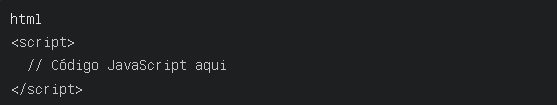

O que é JavaScript?
JavaScript é uma linguagem de programação de alto nível, interpretada e dinâmica, amplamente utilizada no desenvolvimento web. Ela permite adicionar interatividade, efeitos e funcionalidades avançadas às páginas da web.
Usos comuns do JavaScript
- Validação de formulários
- Criação de menus interativos
- Implementação de sliders e carrosséis de imagens
- Adição de efeitos visuais, como pop-ups e animações
- Criação de jogos simples
- Manipulação do conteúdo da página (DOM)
- Envio de dados para o servidor usando AJAX
Incluindo JavaScript em uma página web
Existem duas maneiras de incluir JavaScript em uma página HTML:
- Usando uma tag '<script>' no '<head>' ou '<body>':

- Referenciando um arquivo JavaScript externo:
Sintaxe básica
- Variáveis são declaradas usando 'let', 'const' ou 'var'.
- Funções são definidas usando a palavra-chave 'function'.
- Condicionais utilizam 'if...else' ou 'switch'.
- Loops incluem 'for', 'whil'e' e 'do...while'.
- Eventos são manipulados usando 'addEventListener()''.
Exemplo simples
Recursos adicionais